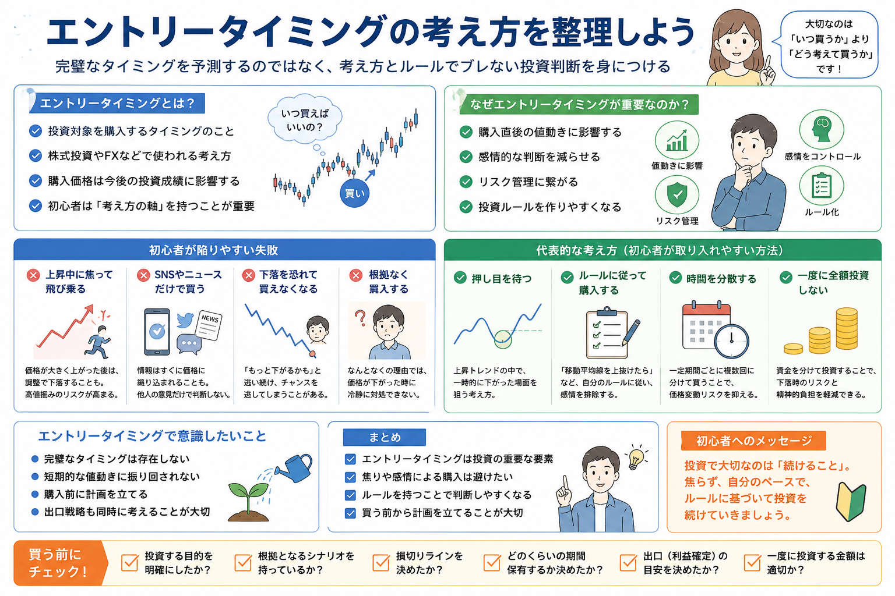

投資手法・リスク管理
エントリータイミングの考え方とは？
投資初心者が悩みやすいテーマの一つが「いつ買えばよいのか」です。
しかし、完璧な買い場を毎回予測することは簡単ではありません。大切なのは、値動きを当てることだけではなく、焦って飛び乗らないための考え方を持つことです。
この記事では、株式投資やFXなどで使われるエントリータイミングの基本を、初心者向けに中立的に整理します。
Basic
エントリータイミングとは？

エントリータイミングとは、投資対象を購入するタイミングのことです。
株式投資では「どの価格帯で株を買うか」、FXでは「どの相場状況で買いまたは売りから入るか」といった場面で使われます。
同じ銘柄や商品でも、購入価格が高すぎると含み損を抱えやすくなり、逆に計画的に入れれば心理的にも落ち着いて保有しやすくなります。
ただし、エントリータイミングは「必ず利益が出る買い場」を探すものではありません。
初心者にとっては、感情ではなく判断基準を持って買うための考え方として理解することが大切です。基本的な買い時の考え方は、株はいつ買えばいい？でも整理しています。
Importance
なぜエントリータイミングが重要なのか？
理由1
購入直後の値動きに影響する
高値で焦って買うと、少し下がっただけでも不安になりやすくなります。購入価格は、その後の心理状態にも影響します。
理由2
感情的な判断を減らせる
「上がっているから今すぐ買う」ではなく、事前の条件を満たしたら買う形にすると、焦りによる判断を抑えやすくなります。
理由3
リスク管理につながる
どこで買うかを考えると、同時にどこまで下がったら見直すかも考えやすくなります。
Mistakes
初心者が陥りやすい失敗
上昇中に焦って飛び乗る
価格が急に上がっていると、「今買わないと乗り遅れる」と感じやすくなります。
しかし、急上昇後に一時的な調整が入ることもあります。買う理由が「上がっているから」だけの場合、高値掴みになったときに判断が難しくなります。
SNSやニュースだけで買う
SNSやニュースは情報収集のきっかけになりますが、それだけで購入を決めるのは注意が必要です。
話題になった時点ですでに価格へ織り込まれている場合もあります。自分の投資目的やリスク許容度と合っているかを確認しましょう。
下落を恐れて買えなくなる
逆に、下落が怖くていつまでも買えないこともあります。
完璧な底値を待ち続けると、結果的に何もできないまま時間だけが過ぎる場合があります。待つことの難しさは、投資で“待つ”のが難しい理由とは？でも解説しています。
根拠なく購入する
「なんとなく安そう」「有名企業だから大丈夫そう」といった感覚だけで買うと、下がったときにどうすればよいか分からなくなります。
特に一度利益が出始めると判断が大きくなりやすいため、勝ち始めた時が一番危険な理由も合わせて確認しておきたい内容です。
Ideas
代表的な考え方
ここでは、初心者がエントリータイミングを考えるときに使いやすい代表例を整理します。どれか一つが絶対に正しいというより、自分の投資目的に合う形で使うことが大切です。
押し目を待つ
押し目とは、上昇している流れの中で一時的に価格が下がる場面のことです。
ただし、下がったから必ず買うのではなく、なぜ下がっているのか、投資対象の前提が崩れていないかを確認する必要があります。
ルールに従って購入する
「一定の下落率で検討する」「決算後に確認する」「チャートや業績を見てから買う」など、事前に条件を決めておく方法です。
ルールがあると、その場の雰囲気に流されにくくなります。
時間を分散する
一度に買うのではなく、複数回に分けて購入する考え方です。
買うタイミングを一点に絞らないため、高値で全額購入してしまうリスクを抑えやすくなります。時間分散の考え方はドルコスト平均法とは？でも詳しく整理しています。
一度に全額投資しない
余力を残しておくと、価格が下がったときにも冷静に選択肢を持ちやすくなります。
ただし、追加購入をする場合も、事前の計画なしに買い増すとナンピンの失敗につながるため注意が必要です。
Checklist
エントリータイミングで意識したいこと
-
完璧なタイミングは存在しないと考える
底値で買って高値で売ることを毎回狙うと、判断が難しくなります。予想を当てるより、失敗しても大きく崩れない形を考えることが大切です。
-
短期的な値動きに振り回されない
数日単位の上下だけで焦って買うと、当初の投資目的からずれやすくなります。短期投資なのか長期投資なのかを先に整理しましょう。
-
購入前に計画を立てる
投資額、買う理由、下がった場合の対応、利益が出た場合の対応を事前に決めておくと、感情的な判断を減らしやすくなります。
-
出口戦略も同時に考える
買う前から、利益確定・損切り・保有継続の基準を考えておくことも重要です。売却計画については出口戦略とは？も参考になります。
Plan
買う前に決めておきたい簡単な基準
- なぜその投資対象を買うのか
- どのくらいの期間保有するつもりか
- いくらまで投資するのか
- 下がったときに追加購入するのか、損切りするのか
- 利益が出たときにどのように判断するのか
エントリータイミングは、単独で考えるよりも資金管理や売却計画とセットで考えるほうが実践しやすくなります。
損失を小さくし、利益を伸ばす考え方は損小利大とは？でも整理しています。
Summary
まとめ
エントリータイミングは、投資における重要な要素の一つです。
ただし、初心者が最初から完璧な買い場を当てようとすると、焦りや不安によって判断がぶれやすくなります。
大切なのは、感情で購入するのではなく、買う理由・投資額・保有期間・損切りや利益確定の基準を事前に考えておくことです。
特に長く資産形成を考える場合は、長期投資とは？やドルコスト平均法とは？のように、時間を味方につける考え方も合わせて確認しておくと理解しやすくなります。
あわせて読みたい関連記事
よくある質問
-
Q. 株はいつ買うのが正解ですか？
すべての人に共通する正解のタイミングはありません。投資目的、保有期間、許容できる損失、資金配分によって判断は変わります。大切なのは、値動きの予想だけで買うのではなく、事前にルールを決めておくことです。 -
Q. 上昇中の銘柄を買ってはいけませんか？
上昇中だから必ず悪いわけではありません。ただし、焦って根拠なく購入すると高値掴みにつながることがあります。買う理由、損切りライン、投資額を決めたうえで判断することが大切です。 -
Q. エントリータイミングは初心者でも重要ですか？
重要です。購入価格はその後の含み益や含み損に影響します。ただし、初心者は完璧なタイミングを当てようとするより、資金を分ける、時間を分散する、ルールに従うといった考え方を優先したほうが判断しやすくなります。 -
Q. 購入タイミングより重要なことはありますか？
あります。投資目的、資金管理、損切りや利益確定のルール、出口戦略も重要です。買うタイミングだけでなく、買った後にどうするかまで考えることで、感情的な判断を減らしやすくなります。
一般ユーザー目線の体験でおすすめの会社をご紹介

ご利用にあたっての注意事項
本記事は情報提供を目的としており、投資の勧誘を目的としたものではありません。株式・投資信託・外国証券・FX等の取引は元本保証がなく、相場変動等により損失が生じる場合があります。取引開始前に、契約締結前交付書面や商品説明書、目論見書等を必ずご確認のうえ、ご自身の判断と責任でお取引ください。